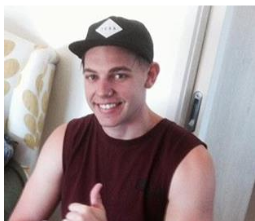
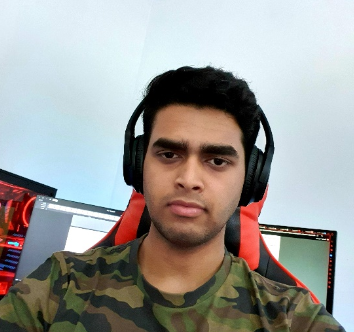

Andrew Noorbergen
Student Number: S3882566
GitHub website link:
Click Here

Andrew is a 24-year-old IT enthusiast whose interest in IT started at an incredibly young age,
so early that he had built a PC at age 10 and has only been fuelled to a point he is pursuing a
bachelors in IT. His hobbies are well rounded with gaming, consumption of visual media, (Streaming networks,
YouTube, and other film-based media) cooking, baking and light physical exercise. His experience in IT is more
based in his free time but his final goal is to enter a great tech-based career.
Connor Sinadinovic
Student Number: S3884657
GitHub website link:
Click Here
Connor is 19 years old; he was born in Sydney but is currently residing in Chicago, Illinois.
Connor graduated high school in 2019 while in the US but decided to continue his studies in Australia,
with two part time jobs he is often kept very busy. While in high school Connor really enjoyed basketball,
his hobbies include watching the sports he likes – he is a fan of the Philadelphia 76ers. His interest in
IT started very young, Connor believes this could be because both his parents are in the IT industry,
but his interest mostly began when he started to play video games. Currently, he has little personal
experience with the IT industry.
Nicholas Bond
Student Number: S3882856
GitHub website link:
Click Here
Nicholas is a 25-year-old male based in Adelaide and on the autism spectrum with a deep interest in IT for both entertainment
purposes and medical needs. Their hobbies include video games, reading, tabletop board games and music. Their experience in IT is
very little, with a few small courses that did not go further than term one but their interest in has always remained the same; to
develop skills to dedicate towards interactive entertainment or software development in particular/niche medical needs such as heart
conditions and diabetes.
Tyson Jones
Student Number: S3883300
GitHub website link:
Click Here

Tyson is a 26-year-old enrolments and timetabling officer based in Canberra, so he
already has a decent amount of experience in IT and his interest in IT seems to be wanting a deeper
understanding of IT functions in their creation, manipulation, and repairs.
His hobbies include music both writing and playing their own works with a broad range of genres,
gaming competitively on many different online games and enjoys exercising at the gym as a self-proclaimed ‘gym junkie.’
Alex Joy
Student Number: S3883149
GitHub website link:
Click Here

Alex is 19 years old and was born in Kerala, a large state in India. Alex moved from India to New Zealand
and then from NZ to Australia however, he and his family have a long running tradition of returning to India
every two years as most of his family still live there. His family absolutely adores hearing all the different
things about Australia. In high school he was the tech captain and has worked on making full scale working models.
His career goals initially started with wanting to become a police officer, and later IT took his interest,
however, instead of trading one ship for another he has decided to pursue both fields. His interest in IT began
when he watched good Sci-Fi movies and shows like Star Trek, The Matrix and 2001 Space Odyssey. He has basic academic
and practical skills in IT and hoping, like many in this course, to gain professional experience.
Lachlan Hamersley
Student Number:
GitHub website link: